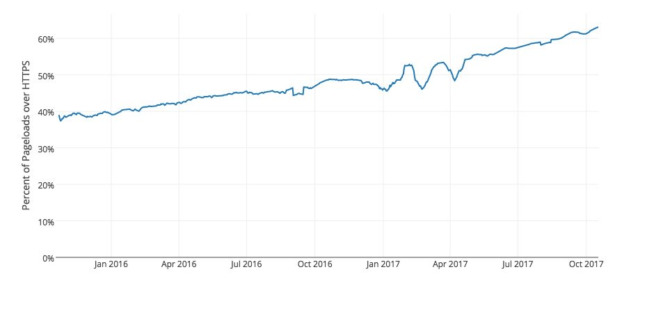
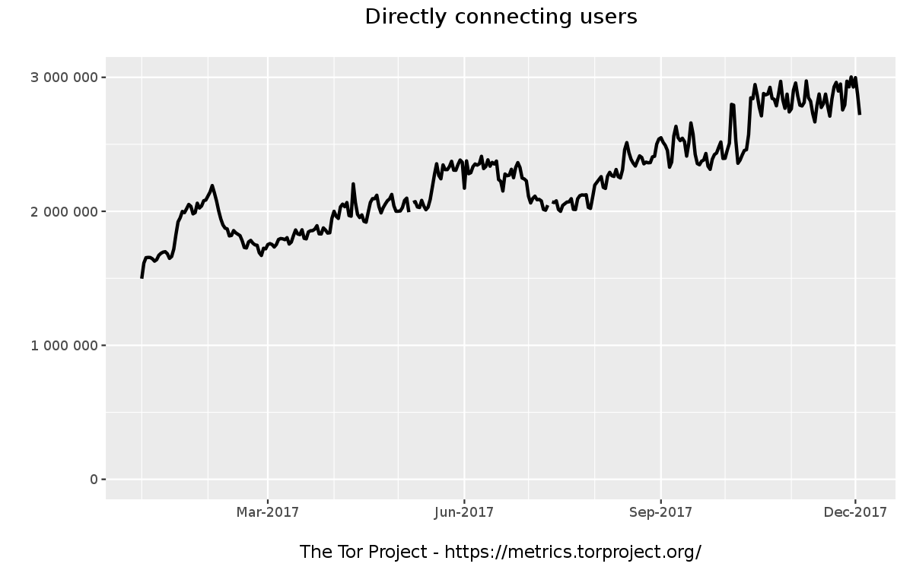
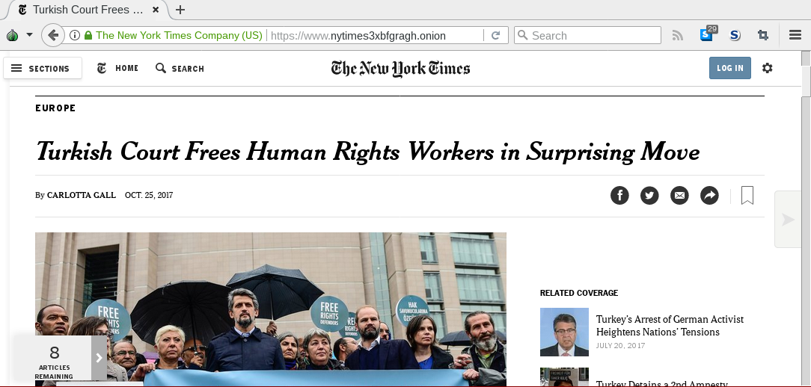

Grundrechte im Internet - quo vadis?
von
Stefan Leibfarth
beim
38. Triberger Symposium
Was ist der Chaos Computer Club e.V. (CCC) ?
- größte europäische HackerInnen-Vereinigung
- Gründung: 1981
- Grundlage: Hackerethik
- Vermittelnde im Spannungsfeld technischer und sozialer Entwicklungen
- Veranstaltungen, Politikberatung, PMs, Publikationen, ...
- Regelmäßig als ExpertInnen beim BVerfG, BT-Ausschüssen, ...
In Stuttgart:
Stammtische, Vortragsreihe, Workshops, Cryptoparties, CmS...
Mehr auf www.cccs.de
Zur Person
- 35 Jahre, Holzmaden (LK ES), 3 Kinder
- Beruflich: Leitender Angestellter bei Kfz-Zulieferer (QM, IT, ...)
- Beim CCC(S):
Pressearbeit, Vorträge, Workshops, Tor-Exit-Relay, u.a. - Ehrenamtlich beim CCC(S) aktiv
Menschenrechte durch Technologie garantieren
... denn auf Gesetze und deren Einhaltung ist immer weniger Verlass.
Beispielhaft:
Beispielhaft:
- Recht sich frei zu informieren: Anonymisierungsdienste, z.B. Tor
- Fernmeldegeheimnis: E2E-Verschlüsselung, z.B. Signal-Protokoll
- Meinungsfreiheit: Anonyme Webseiten, z.B. Onion Services
Integrität und Vertraulichkeit der Geräte sind wichtiger denn je!
Verschlüsselte Verbidungen zu Webseiten

- Schutz der übertragenden Inhalte
- Kein Schutz der Verbindungsdaten --> Keine Anonymität
Anzahl der Tor-Nutzenden

- Hoher Grad an Anonymität
- Zensurumgehung
Massenüberwachung am De-CIX in Frankfurt
- Vollüberwachung des gesamten Verkehrs durch BND (und BfV?)
- Weitergabe an Partner-Dienste
- Ausweitung in Folge des NSA-BND-Kandals
- Klage des ECO anhängig
Ende-zu-Ende Verschlüsselung bei Messengern


- Signal-Protokoll zum Schutz der Inhalte
- Noch nie so viel E2E-Verschlüsselung
- Verbindungsdaten nicht geschützt
Staatliche Schadsoftware (z.B. Quellen-TKÜ)
- Weltweite IT-Unsicherheit (siehe WannaCry)
- Mehr Schaden als Nutzen
- Lieferanten oft Kriminelle
- Durchführung nicht gesetzeskonform möglich
- BSI vs. ZITiS
Hintertüren in Hard- und Software
- Nicht praktikabel
- Standort-Nachteil
- Massiver Vertrauensverlust in IT
- Unkalkulierbares Missbrauchsrisiko
Zuwachs an sinnvollen Onion Services

New York Times, Facebook, DuckDuckGo, The Intercepted, u.a.
Generell: anonymes Publizieren, Zensur extrem aufwändig und sicherste Verbindung
Netzwerk-Durchsetzungs-Gesetz
- Platformen entscheiden über Rechtmäßigkeit
- Intransparent
- Overblocking
- Rechtsweg meist umöglich
- Löst das Grundproblem nicht
Generelle Forderung bei grundrechtsrelevanten Gesetzen
Ablaufdatum und Evaluationspflicht
Danke für die Aufmerksamkeit
Diese Präsentation: t1p.de/53wwKontakt:
Signal: +49 172 63 43 48 0E-Mail: stefan@leibfarth.org
PGP: F8FC B504 087A C78B 1462 7894 E5CE BB2A C135 4426